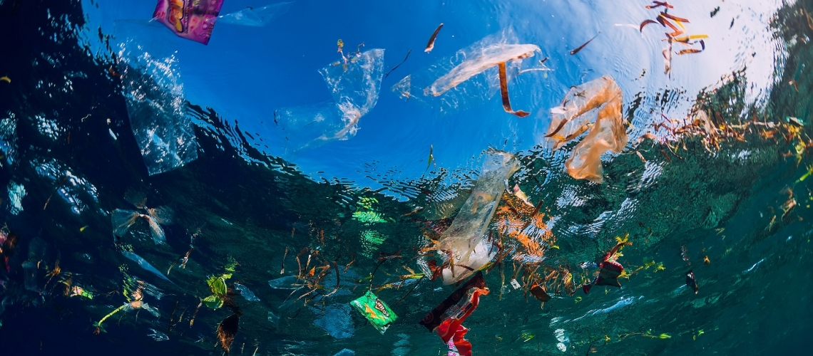
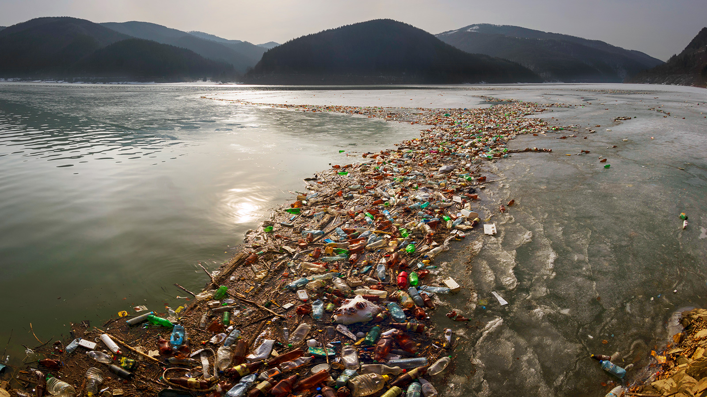

Water pollution is the contamination of water bodies in such a manner that negatively affects its legitimate uses. Water pollution reduces the ability of the body of water support the ecosystem that it would have otherwise supported. Water bodies include for example lakes, rivers, oceans, aquifers, reservoirs and groundwater. Water pollution results when contaminants are introduced into these water bodies. Water pollution can usually be attributed to one of four sources: sewage, industry, agriculture, and urban runoff including storm water.
 